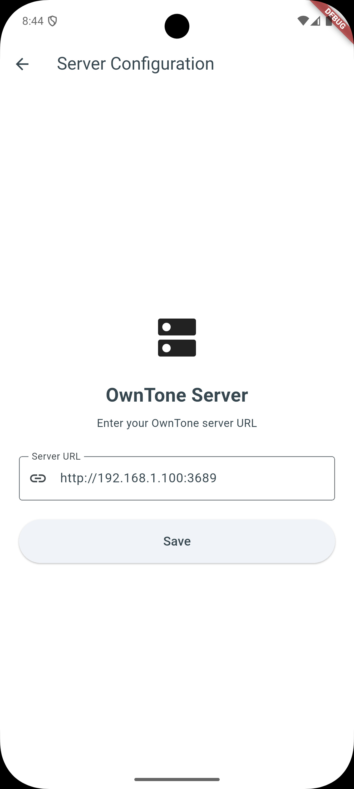
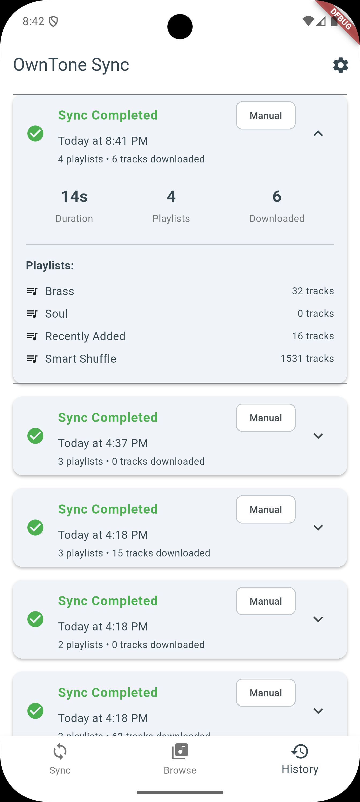
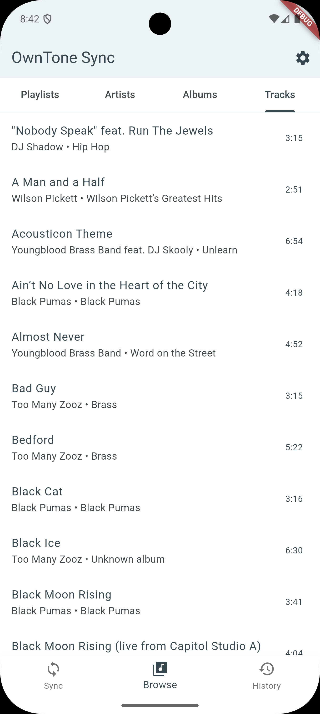
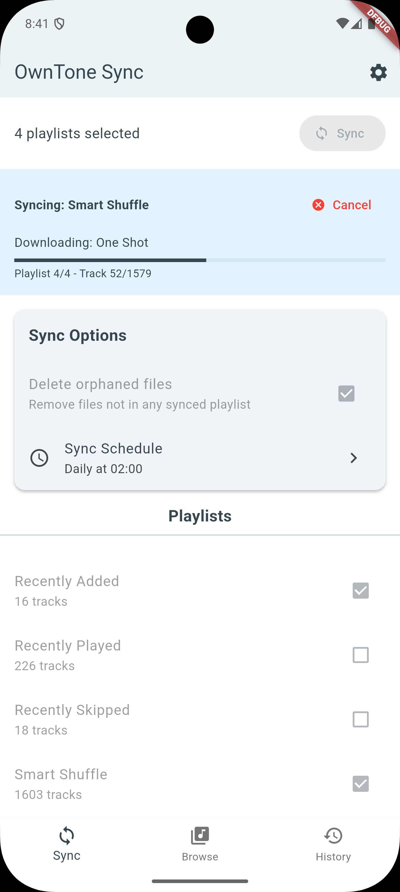

Your Owntone Playlists on your Android Phone
Automatically download and sync playlists from your OwnTone server for offline listening
Features
Offline Playback
Download tracks and playlists from your OwnTone server to your device for offline listening anywhere
Automatic Sync
Schedule overnight syncs to keep your library up to date automatically
Browse Your Library
View synced tracks by playlists, artists, albums, or title with embedded artwork
Playback Tracking
Sync music playback and skip events back to OwnTone for smart playlists (optional)
Sync History
Track all sync operations with detailed logs and statistics
Privacy First
All data stays on your device and your personal server—no cloud storage
Screenshots




Data Safety
No data collection
The app does not collect, transmit, or store any personal data on external servers
Local storage only
All music and settings remain on your device
Direct connection
Communicates only with your personal OwnTone server
No third-party tracking
No analytics, no advertisements, no external services
See our Privacy Policy for complete details
Frequently Asked Questions
What is OwnTone?
OwnTone (formerly forked-daapd) is a free, open-source media server that lets you stream your music collection. Learn more at owntone.github.io.
Do I need an OwnTone server?
Yes, this app requires an OwnTone server running on your local network. The server stores your music library.
What audio formats are supported?
MP3, FLAC, AAC, WAV, M4A, and other formats supported by OwnTone.
Can I use my synced music in other apps?
Yes! Synced files are saved to your device's Music folder and can be played by any music player app.
What permissions does the app need?
Storage access (to save music files), internet access (to connect to your server), and optionally notification access (for playback tracking) and background sync permissions (for automatic syncing).